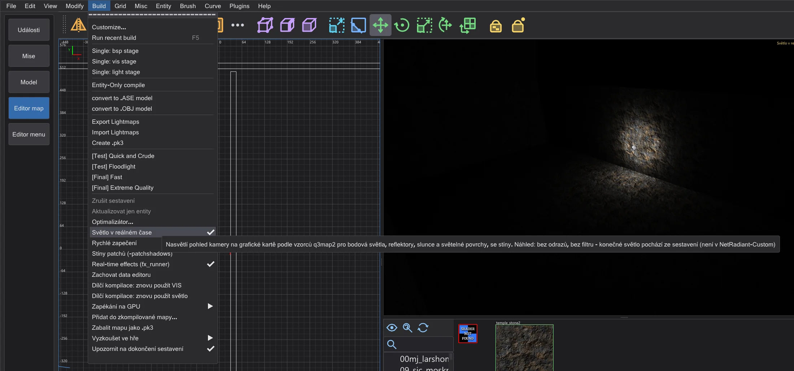
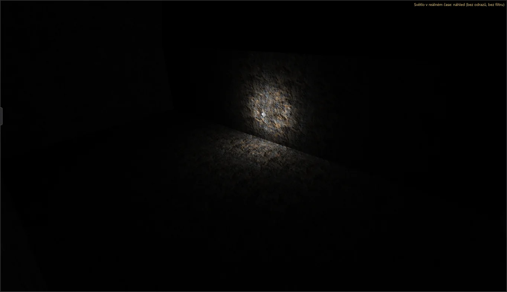
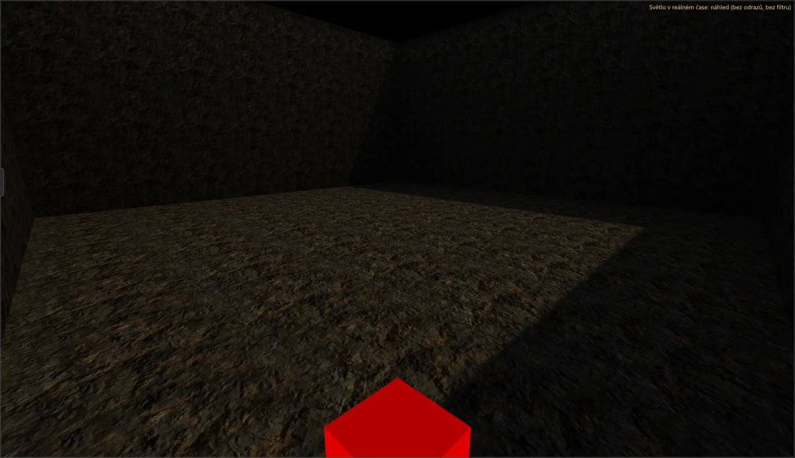
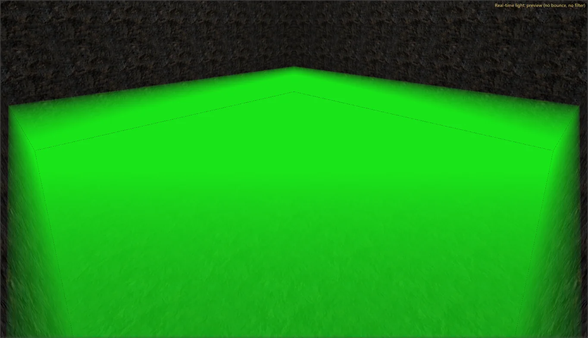
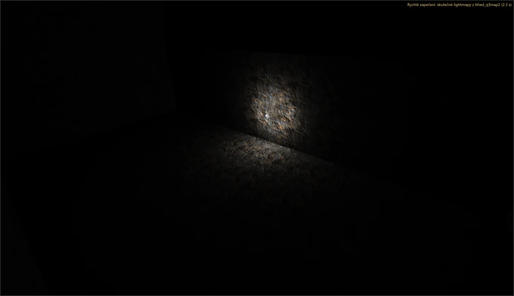

Editor map: rychlost a světlo v reálném čase
Vidět světlo během stavby: Světlo v reálném čase nasvětlí kameru na grafické kartě, Rychlé zapečení sestaví mapu na pozadí a ukáže skutečné lightmapy. Sestavování a úpravy se zrychlily - se stejným výsledkem jako dřív.
Světlo v reálném čase#

- 1
Zapněte Build > Světlo v reálném čase. Kamera (režim vykreslování texturovaný) je nasvětlena světly mapy - bodovými světly, reflektory, sluncem shaderu oblohy (
q3map_sun) a světelnými povrchy (q3map_surfacelight) - podle vzorců q3map2 -light a se stíny. - 2
Posuňte světlo nebo změňte jeho klíče: kamera hned následuje. Každý snímek nasvětlí až 512 světel - každé světlo, jehož dosah zasahuje do obrazu, nejsilnější první, i daleko; 128 nejdůležitějších vrhá stíny, zbytek svítí bez stínu.

Světlo v reálném čase jako ve hře#
Náhled se řídí pravidly q3map2 -light -fast, aby obraz odpovídal zapečeným lightmapám (měřítkem byla testovací mapa skutečného mappera JKA):
- Obloha a slunce: paprsek ke slunci končí u oblohy, jako v q3map2 - samotný brush oblohy (caulk na ostatních stranách, víko nad ním) už slunce nezastíní. Počítají se
sun,q3map_sun,q3map_sunExtiq3map_skyLight(mnoho slabých sluncí po obloze); slunce má dvě kaskády stínů (celá mapa, okolí kamery). - Světelný povrch:
q3map_surfacelightna trojúhelník, dělený podleq3map_lightSubdivide, s přesným konfiguračním faktorem a backsplash (q3map_backsplash); barva zq3map_lightRGBneboq3map_lightImage. - Co vrhá stíny: jen to, co vrhá stíny v q3map2 - brushe světa a func_group (jiné entity jen s
_castShadows), žádné povrchy nodraw, průhledné shadery jen salphashadow, patche jen s Build > Stíny patchů (-patchshadows) (předává se i rychlému zapečení). Zadní stěny jdou do stínových map, takže venkovní světlo už neprosakuje dovnitř. - Models and patches: misc_model entities cast shadows like in q3map2 (in the world always, otherwise only with
_castShadows;_castShadows 0switches it off) and their surfaces withq3map_surfacelightshine per triangle; patches shine over the same tessellation as in -light. Brush faces shine over the triangles of-meta;q3map_sunExtwith deviance and samples and lights with_samplesget their jittered copies with q3map2's own random sequence. - Jako ve hře: se světlem v reálném čase (a se zobrazeným rychlým zapečením) zmizí povrchy nodraw jako caulk a průhledné shadery se kreslí s alphaFunc a blendFunc své první vrstvy.

Fog, effects and sky portal#
- Fog: brushes with a
fogParmsshader and the global fog of worldspawn (_fog) are drawn as the game draws them (RB_FogPass with R_FogFactor): colour and distance to opaque from the shader, the fog surface from the visible side of the brush (orq3map_fogDir), deeper below it is denser. - Effects: fx_runner entities play their effect with the effect system of the cutscene preview - repeat interval
delay/random, direction to thetarget(orangle, otherwise up); START_OFF and ONESHOT wait for a use. Build > Real-time effects (fx_runner) switches them off. The editor has no .bsp, so particles do not bounce off walls. - Sky portal: with a misc_skyportal the sky shows the scene from the portal's place, with the same view and field of view, as in the game (CG_DrawSkyBoxPortal).

Obrázek je zatím anglickyRychlé zapečení#
- 1
Zapněte Build > Rychlé zapečení. Dvě sekundy po poslední změně bhed_q3map2 sestaví mapu v dočasné složce -
-meta,-vis -fast(když mapa nemá únik) a-light -fast- s nízkou prioritou, takže editor zůstane plynulý. - 2
Když je hotovo, kamera ukáže skutečné lightmapy tohoto sestavení; vpravo nahoře stojí Rychlé zapečení: skutečné lightmapy z bhed_q3map2 ( s). Každá změna běžící sestavení zruší a po pauze spustí nové. Vaší mapy ani .bsp vedle ní se to nedotkne.

Rychlé zapečení zapíše stejné lightmapy, mřížku světla a viditelnost jako bhed_q3map2 na příkazovém řádku se stejnými přepínači - autotest soubory porovnává. Je rychlejší než úplné sestavení díky -fast a chybějícím průchodům odrazů; pro sestavení k vydání použijte nabídku Build.
Co se zrychlilo#
Každá změna byla změřena před a po (medián tří běhů, nízká priorita, stejné mapy) a dává stejný výsledek: .bsp z -bsp a -light je bajt po bajtu ten ze sestavení s 1 vláknem ve fázi 6, uložené mapy jsou shodné.
- -light používá všechna jádra pro lightmapy (světlo po světle v blocích, adaptivní supersampling předpovězený a přesně zkontrolovaný) a pro mřížku světla.
- -bsp: oprava T-spojů hledá paralelně a aplikuje v pořadí; hledání stejných bodů mřížky světla používá přihrádky místo prohledávání všech bodů.
- -vis zůstává jako v NetRadiant-Custom: s více vlákny se může mezi sestaveními mírně lišit, s
-threads 1je vždy stejný. Dva způsoby, jak ho udělat stejným i s více vlákny, byly vyzkoušeny a změřeny; oba byly pomalejší. - Editor: obrácení výběru, test výběru v pohledech a soubory NPC optimalizátoru (čtené na pozadí).
| Krok | Mapa | NetRadiant-Custom | předtím (fáze 6) | now |
|---|---|---|---|---|
| BSP (všechna vlákna) | duel_pit | 0.20 s | 0.20 s | 0.20 s |
| VIS (všechna vlákna) | duel_pit | 0.15 s | 0.10 s | 0.10 s |
| LIGHT (všechna vlákna) | duel_pit | 0.66 s | 0.66 s | 0.61 s |
| BSP (1 vlákno) | duel_pit | 0.20 s | 0.20 s | 0.20 s |
| VIS (1 vlákno) | duel_pit | 0.15 s | 0.15 s | 0.15 s |
| LIGHT (1 vlákno) | duel_pit | 3.02 s | 3.33 s | 3.08 s |
| BSP (všechna vlákna) | mp__duel1 | 0.36 s | 0.31 s | 0.31 s |
| VIS (všechna vlákna) | mp__duel1 | 0.15 s | 0.11 s | 0.10 s |
| LIGHT (všechna vlákna) | mp__duel1 | 2.53 s | 2.99 s | 1.92 s |
| BSP (1 vlákno) | mp__duel1 | 0.35 s | 0.31 s | 0.31 s |
| VIS (1 vlákno) | mp__duel1 | 0.20 s | 0.15 s | 0.16 s |
| LIGHT (1 vlákno) | mp__duel1 | 8.72 s | 9.68 s | 9.63 s |
| BSP (všechna vlákna) | t1_inter | 0.31 s | 0.26 s | 0.26 s |
| VIS (všechna vlákna) | t1_inter | 0.15 s | 0.10 s | 0.10 s |
| LIGHT (všechna vlákna) | t1_inter | 0.31 s | 0.26 s | 0.31 s |
| BSP (1 vlákno) | t1_inter | 0.30 s | 0.25 s | 0.26 s |
| VIS (1 vlákno) | t1_inter | 0.15 s | 0.11 s | 0.10 s |
| LIGHT (1 vlákno) | t1_inter | 0.31 s | 0.31 s | 0.31 s |
| BSP (všechna vlákna) | md_ch_ben | 0.81 s | 0.71 s | 0.76 s |
| VIS (všechna vlákna) | md_ch_ben | 2.77 s | 2.27 s | 2.23 s |
| LIGHT (všechna vlákna) | md_ch_ben | 3.73 s | 4.24 s | 2.58 s |
| BSP (1 vlákno) | md_ch_ben | 0.86 s | 0.71 s | 0.71 s |
| VIS (1 vlákno) | md_ch_ben | 30.53 s | 24.90 s | 24.60 s |
| LIGHT (1 vlákno) | md_ch_ben | 12.66 s | 12.65 s | 12.76 s |
| BSP (všechna vlákna) | kejim_post | 4.74 s | 4.59 s | 4.14 s |
| VIS (všechna vlákna) | kejim_post | 745.40 s | 621.47 s | 573.70 s |
| LIGHT (všechna vlákna) | kejim_post | 9.18 s | 10.28 s | 7.21 s |
| BSP (všechna vlákna) | duel_mos_espa | 53.35 s | 44.86 s | 19.57 s |
| Krok | Mapa | předtím (fáze 6) | now |
|---|---|---|---|
| Obrátit výběr (vybrat vše) | duel_mos_espa | 29.74 s | 5.2 ms |
| Obrátit výběr (vybrat vše) | kejim_post | 1.34 s | 0.7 ms |
| Obrátit výběr (vybrat vše) | md_am_sith | 1.36 s | 0.8 ms |
| Otevřít .bsp (dekompilace) | duel_mos_espa | 7.71 s | 7.98 s |
| Otevřít .bsp (dekompilace) | kejim_post | 2.01 s | 2.64 s |
| Otevřít .bsp (dekompilace) | md_am_sith | 3.29 s | 3.42 s |
| Načíst .map | duel_mos_espa | 1.31 s | 1.29 s |
| Načíst .map | kejim_post | 662.5 ms | 717.4 ms |
| Načíst .map | md_am_sith | 805.6 ms | 827.7 ms |
| Textury načteny | duel_mos_espa | 1.64 s | 1.80 s |
| Textury načteny | kejim_post | 4.2 ms | 821.6 ms |
| Textury načteny | md_am_sith | 1.93 s | 2.16 s |
| Uložit .map | duel_mos_espa | 815.8 ms | 745.4 ms |
| Uložit .map | kejim_post | 142.5 ms | 173.7 ms |
| Uložit .map | md_am_sith | 175.9 ms | 189.6 ms |
| Posunout vše | duel_mos_espa | 285.1 ms | 329.4 ms |
| Posunout vše | kejim_post | 53.2 ms | 72.0 ms |
| Posunout vše | md_am_sith | 62.9 ms | 68.0 ms |
| Vrátit posun | duel_mos_espa | 294.1 ms | 353.0 ms |
| Vrátit posun | kejim_post | 26.2 ms | 36.4 ms |
| Vrátit posun | md_am_sith | 33.3 ms | 32.6 ms |
| Vrátit CSG odečíst | duel_mos_espa | 171.1 ms | 207.4 ms |
| Vrátit CSG odečíst | kejim_post | 8.6 ms | 7.9 ms |
| Vrátit CSG odečíst | md_am_sith | 12.1 ms | 10.1 ms |
| Start optimalizátoru | duel_mos_espa | 48.6 ms | 39.2 ms |
| Start optimalizátoru | kejim_post | 10.2 ms | 13.1 ms |
| Start optimalizátoru | md_am_sith | 14.7 ms | 11.8 ms |
| Kontrola optimalizátoru | duel_mos_espa | 1.47 s | 1.34 s |
| Kontrola optimalizátoru | kejim_post | 162.4 ms | 201.8 ms |
| Kontrola optimalizátoru | md_am_sith | 303.7 ms | 257.4 ms |
| Přepnout do editoru map, než jsou data hry připravena | - | 273.3 ms | 258.1 ms |
| Náhled: příprava scény (md_am_sith) | - | 1.44 s | 1.40 s |
| Náhled: čas snímku, scéna (průměr) | - | 15.0 ms | 15.0 ms |
| Náhled: čas snímku, volný let (průměr) | - | 8.2 ms | 8.1 ms |
kejim_post "Textury načteny" bylo dřív tak rychlé jen proto, že fáze 6 v tomto běhu načetla Jedi Outcast bez jeho složek (0 shaderů, každá stěna s náhradním obrázkem - chyba opravená ve fázi 7); teď se načte 1187 shaderů a jejich obrázky. Kroky, které se neměnily, kolísají mezi běhy asi o 20 %.